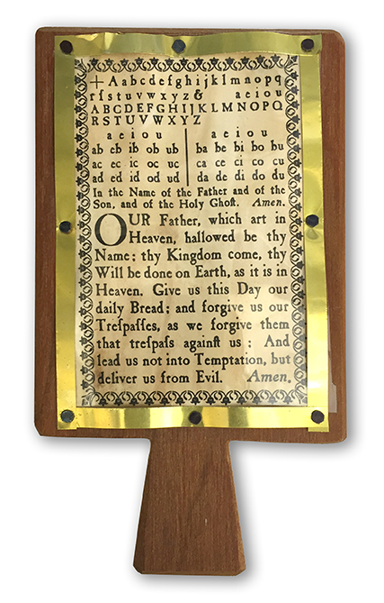
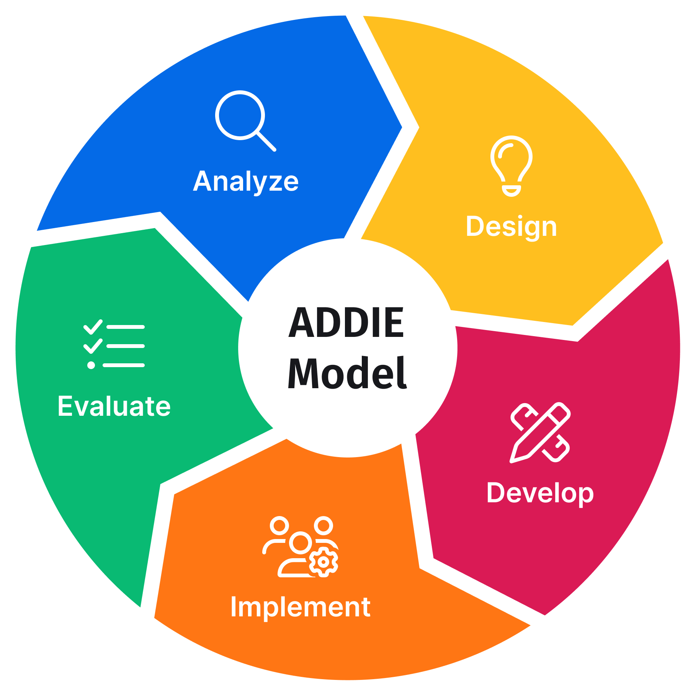
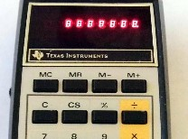

Introduction
When you hear the term instructional technology, you may immediately think of computers, interactive whiteboards, learning management systems, or artificial intelligence. However, instructional technology existed long before the first computer was introduced into a classroom. Books, pencils, chalkboards, maps, and even simple visual aids were once innovative technologies that changed how teachers delivered instruction and how students accessed information.
Throughout history, educators have searched for ways to make learning more accessible, efficient, engaging, and effective. As new technologies emerged, they created opportunities to rethink traditional teaching methods, expand access to education, and personalize learning experiences.
The history of instructional technology involves two closely related areas:
Instructional media: The tools, materials, and technologies used to deliver instruction and support learning.
Instructional design: The systematic process of planning, developing, implementing, and evaluating instruction to support learning outcomes.
Understanding the history of both helps educators recognize that effective technology integration is not simply about adopting the newest tool. It is about making intentional decisions that improve teaching and learning.
Learning objectives
- Identify major milestones in the history of instructional technology.
- Explain how technological advancements have influenced teaching and learning.
- Describe the relationship between instructional technology and instructional design.
- Examine how emerging technologies create opportunities and challenges for educators.
- Recognize recurring themes in the adoption of educational technology.
Early tools | Before 1900–1930s
Timeline highlights
-
1600s–1700s
Hornbooks and printed educational materials support literacy.
-
1800s
Chalkboards, maps, writing slates, and projection devices expand instruction.
-
1900s–1930s
Educational films, radio, and visual media supplement instruction.
1. Early Instructional Tools: Before 1900
Long before electronic devices entered classrooms, educators relied on physical tools to communicate information and support student learning. Although these tools may seem relatively simple today, they represented significant advancements in education.


Hornbooks and printed materials
During the American colonial period, hornbooks were used to teach children basic reading skills. A hornbook typically consisted of a wooden paddle containing printed letters, numbers, or religious passages protected by a thin, transparent layer of horn. As printed educational materials became more widely available, textbooks helped standardize instruction and provided students with resources they could reference independently.
Chalkboards and writing tools
During the nineteenth century, chalkboards became increasingly common in American classrooms. They allowed teachers to demonstrate concepts, solve problems, and present information to an entire class simultaneously. Individual writing slates, followed by increasingly affordable paper and pencils, provided students with opportunities to practice skills, record information, and demonstrate their understanding.
The magic lantern
The magic lantern was an early projection device that used light to display images from glass slides. Its use in nineteenth-century education allowed teachers to introduce visual representations of scientific concepts, geographical locations, and historical subjects that students might not otherwise encounter. These early technologies helped establish the importance of visual representation, shared instruction, and student practice.
2. The Audiovisual Movement: 1900–1930s
During the early twentieth century, educators began exploring how photographs, films, recordings, and other media could supplement traditional classroom instruction. This period became associated with the visual instruction movement, which later expanded into the audiovisual instruction movement as sound technologies developed.
Educational films
Motion pictures introduced new opportunities for students to observe processes, events, and environments that were difficult to experience firsthand. Students could observe animal behavior, scientific experiments, or industrial processes without leaving the classroom. Educational films generated considerable excitement. Some technology advocates even predicted that motion pictures would eventually replace textbooks. However, films became supplemental instructional resources rather than replacements for teachers or printed materials.
Educational radio
During the 1920s and 1930s, radio emerged as a medium for delivering educational programming. Schools and universities experimented with broadcasting lectures, music, language instruction, and other educational content. Radio also expanded opportunities for distance education, building upon earlier correspondence education programs that delivered instructional materials through the mail.
The audiovisual movement demonstrated that instruction did not have to rely exclusively on textbooks or teacher lectures. It also raised an important question that educators continue to face today: How can new media be meaningfully integrated into existing instructional practices?
Instructional design | 1940s–1970s
Timeline highlights
-
1940s
Military training accelerates systematic instructional design.
-
1950s
Teaching machines, educational television, and Bloom’s Taxonomy gain attention.
-
1960s–1970s
Instructional systems design approaches expand.
3. World War II and Modern Instructional Design: 1940s
World War II represented a major turning point in the development of instructional technology. The United States military faced the challenge of preparing large numbers of individuals to perform specialized tasks quickly, consistently, and accurately. Traditional instructional approaches were not always practical given the scale and urgency of military training. As a result, psychologists, educators, and military training specialists collaborated to develop more systematic approaches to instruction.
Training programs incorporated instructional films, demonstrations, diagrams, manuals, and other specialized materials. Greater attention was also given to identifying the skills learners needed, organizing instruction logically, and evaluating whether training had been successful. This period contributed significantly to the development of modern instructional design, shifting the focus beyond the tools used to deliver instruction toward the deliberate planning of learning experiences. After the war, systematic approaches to training continued to develop in educational institutions, businesses, government agencies, and other organizations.
4. Learning Science and Programmed Instruction: 1950s–1970s
During the decades following World War II, instructional technology became increasingly influenced by research in psychology, learning theory, communication, and systems design. Educators were not only interested in how information could be delivered but also in how people learned and how instruction could be structured to improve learning outcomes.
Teaching machines and behaviorism
During the 1950s, psychologist B. F. Skinner popularized teaching machines based on principles of behaviorism and reinforcement. Skinner built upon earlier work in automated instruction, including teaching machines developed by Sidney Pressey in the 1920s. Teaching machines presented instructional content in small sections, required learners to respond, and provided feedback. Students could progress through material at an individualized pace.
This approach became known as programmed instruction. Its characteristics included clearly structured content, active responses, immediate feedback, and gradual progression through learning material. Many of these characteristics remain recognizable in modern educational software, including self-paced courses, automated quizzes, and adaptive practice activities.
Bloom's Taxonomy
In 1956, Benjamin Bloom and his colleagues published a framework for classifying educational objectives within the cognitive domain. The framework encouraged educators to consider different levels of thinking when developing instruction and assessments. The original taxonomy included six categories: Knowledge, Comprehension, Application, Analysis, Synthesis, and Evaluation. The taxonomy helped strengthen the relationship between learning objectives, instructional activities, and assessment.
Robert Gagné and the conditions of learning
In 1965, educational psychologist Robert Gagné published The Conditions of Learning. His work emphasized that different learning outcomes require different instructional conditions and strategies. His research helped establish the importance of deliberately sequencing instruction, providing opportunities for practice, and supporting learners through appropriate instructional events.
The systems approach and ADDIE
During the 1960s and 1970s, instructional design became increasingly systematic. Instructional systems development models provided structured processes for identifying learning needs, developing materials, implementing instruction, and evaluating effectiveness. These approaches eventually contributed to the widely recognized ADDIE framework. Rather than being a single model invented at one specific moment, ADDIE emerged from earlier instructional systems development approaches. Evaluation and revision can occur throughout the process.

| Phase | Purpose |
|---|---|
| Analysis | Identify learning needs, challenges, and learner characteristics. |
| Design | Establish objectives, instructional strategies, and assessments. |
| Development | Create instructional materials and learning activities. |
| Implementation | Deliver the instructional experience. |
| Evaluation | Determine effectiveness and identify improvements. |
5. Educational Television and Expanding Classroom Media: 1950s–1970s
As instructional design developed into a professional field, classroom technologies continued to evolve. Educational television gained attention during the 1950s as a method for delivering instruction to larger audiences. Teachers could supplement classroom lessons with recorded or broadcast programming, giving students access to additional expertise and resources.
Other technologies also changed everyday classroom practices. Overhead projectors allowed teachers to display and annotate information, photocopiers made instructional materials easier to distribute, electronic calculators supported mathematical computations, and automated scoring systems reduced the time required to grade certain assessments.



These developments improved the efficiency and flexibility of instruction. However, equipment costs, limited teacher training, scheduling difficulties, and challenges integrating media into the curriculum prevented some technologies from meeting their original expectations. These challenges remain familiar to educators today. Purchasing technology does not guarantee that it will be used effectively.
Computers and the web | 1960s–1990s
Timeline highlights
-
1960
PLATO begins development.
-
1977–1980s
Personal computers become increasingly available to schools.
-
1989–1990s
The World Wide Web expands networked learning.
6. The Computer Revolution: 1960s–1980s
Early computer-assisted instruction
One of the most significant early developments in computer-assisted instruction was PLATO, an educational computing project launched at the University of Illinois in 1960. PLATO, which stands for Programmed Logic for Automatic Teaching Operations, allowed students to interact with computerized lessons rather than simply receive information through printed materials or lectures. As the system developed, it supported interactive exercises, communication between users, and other features that anticipated aspects of modern online learning platforms. PLATO demonstrated that computers could serve as instructional environments rather than simply tools for performing calculations.

Personal computers enter the classroom
The introduction of commercially available personal computers in the late 1970s and early 1980s made computing increasingly accessible to schools and individuals. The Apple II, introduced in 1977, was among the influential early personal computers. IBM introduced its personal computer in 1981, contributing to the broader expansion of personal computing.

Schools began establishing computer laboratories and incorporating educational software into the curriculum. Students used computers for activities such as word processing, mathematical practice, educational games, and introductory programming. Unlike many earlier instructional technologies, computers allowed students to interact directly with digital content, receive automated feedback, and create their own digital products. The role of the learner began expanding from a consumer of instructional content to an active participant and creator.
7. The Internet and Connected Learning: 1990s
The development of the World Wide Web fundamentally changed how educators and students accessed, shared, and communicated information. In 1989, Tim Berners-Lee proposed the World Wide Web while working at CERN. By 1991, the web software had been announced publicly, and the introduction of browsers such as Mosaic in 1993 helped make the web more accessible to everyday users.


For educators, the internet introduced opportunities to move beyond the resources available within the physical classroom. Students could access digital libraries, investigate current events, communicate with experts, and collaborate with individuals in other locations. The internet also contributed to a growing emphasis on information literacy. With increasing access to information, students needed to learn how to locate reliable sources, evaluate information, recognize bias, and use digital resources responsibly.
Rather than serving primarily as providers of information, educators increasingly had opportunities to guide students through the process of discovering, evaluating, and applying information.
The emergence of online learning
Although distance education existed long before the internet, web-based technologies expanded the possibilities for delivering instruction remotely. Educational institutions began developing online courses that incorporated digital readings, email communication, discussion boards, and electronic assignment submissions. Unlike earlier correspondence courses, internet-based learning made more frequent communication and interaction between instructors and students possible.
Digital learning | 2000s–2010s
Timeline highlights
-
2000s
Learning management systems and online courses become more widespread.
-
2010s
Portable devices, cloud-based tools, and collaboration expand.
8. Digital Learning and the Connected Classroom: 2000s–2010s
During the early twenty-first century, digital technology became increasingly integrated into everyday educational practices. Computers were no longer limited to designated laboratories, and portable devices and wireless internet created opportunities to incorporate technology across subject areas.


Learning management systems
Learning management systems (LMSs) provided centralized digital environments for organizing, delivering, and managing instruction. Early platforms such as Moodle, which released its first version in 2002, helped establish the digital learning environments that are familiar to educators today. Modern learning management systems, including Canvas, Blackboard, and Moodle, allow instructors to distribute instructional materials, communicate with students, administer assessments, provide feedback, and monitor student progress. These platforms also support face-to-face, hybrid, and fully online learning.
Mobile learning
The increased availability of laptops, smartphones, and tablets expanded opportunities for students to access educational resources beyond traditional classroom settings. This approach, known as mobile learning, allows learners to engage with instructional materials across different locations and at different times. Schools also began implementing one-to-one technology initiatives, in which individual students were provided access to personal computing devices.
Collaboration and content creation
Cloud-based applications and collaborative digital tools introduced additional opportunities for students to work together. Rather than using computers primarily to complete individual practice exercises, students could collaborate on documents, develop multimedia presentations, participate in online discussions, and create digital products.
| Technology | Instructional application |
|---|---|
| Interactive whiteboards | Interactive demonstrations and collaborative activities |
| Cloud-based applications | Real-time collaboration and feedback |
| Educational games | Practice, problem-solving, and engagement |
| Open educational resources (OER) | Access to openly licensed instructional materials |
| Massive open online courses (MOOCs) | Large-scale online learning opportunities |
| Virtual and augmented reality | Simulated and immersive learning experiences |
| Adaptive learning software | Personalized practice based on learner performance |
Together, these technologies expanded opportunities for flexible learning, collaboration, and student participation.
Modern era | 2020–present
Timeline highlights
-
2020
The pandemic accelerates adoption of digital learning.
-
2022–Present
Generative AI introduces new opportunities and challenges.
9. COVID-19 and the Acceleration of Digital Learning: 2020–2022
The COVID-19 pandemic represented a significant turning point in the adoption of instructional technology. Beginning in 2020, widespread school closures required educational institutions around the world to rapidly transition to alternative instructional delivery methods. Educators relied on video conferencing platforms, learning management systems, digital assessments, recorded lectures, and online collaboration tools to maintain instructional continuity.

However, the rapid transition also highlighted the difference between intentionally designed online learning and emergency remote teaching.
| Emergency remote teaching | Intentionally designed online learning |
|---|---|
| Temporary response to a disruption | Planned instructional delivery method |
| Rapid conversion of existing materials | Purposefully developed digital materials |
| Limited preparation time | Structured development and evaluation |
| Focus on maintaining instruction | Focus on effective online learning experiences |
Although both approaches rely on technology, effective online learning requires deliberate attention to instructional design, accessibility, student engagement, communication, and assessment.
The digital divide
The pandemic also brought greater attention to inequalities in technology access. Not all students had reliable internet connections, appropriate devices, accessible instructional materials, or suitable environments for learning. These disparities are part of what is commonly referred to as the digital divide. The pandemic demonstrated that providing digital instruction involves more than simply making technology available. Educational institutions must also consider accessibility, technical support, digital literacy, and equitable learning opportunities.
10. Artificial Intelligence and the Future: 2022–Present
Although artificial intelligence has been used in educational applications for decades, the public release of ChatGPT on November 30, 2022, marked a significant milestone in the widespread availability of generative artificial intelligence. Unlike traditional educational software that relies primarily on predetermined content or responses, generative AI can produce new text, images, computer code, and other materials in response to user prompts.
AI in teaching and learning
Educators can use artificial intelligence to support instructional activities such as developing lesson plans, generating practice questions, brainstorming instructional strategies, and creating differentiated learning materials. Students may use AI tools to receive explanations, explore unfamiliar concepts, practice skills, brainstorm ideas, or receive feedback on their work when permitted by their instructors.
However, the integration of artificial intelligence also introduces important challenges related to academic integrity, privacy, bias, misinformation, intellectual property, and the development of independent thinking skills. In 2023, UNESCO published guidance emphasizing the importance of a human-centered approach to generative AI in education, including appropriate policies, ethical considerations, and human oversight.
Emerging technologies
| Technology | Description |
|---|---|
| Virtual reality (VR) | Creates immersive digital environments where students can explore, practice, and participate in simulated experiences. |
| Augmented reality (AR) | Adds digital information to the physical environment. |
| Adaptive learning | Adjusts content, difficulty, or practice opportunities based on learner performance. |
| Learning analytics | Uses data about student learning and participation to inform instructional decisions and identify opportunities for support. |
While these technologies offer exciting possibilities, their effectiveness depends on how they are implemented, the needs of learners, and the quality of the instructional experience.
Review and references | Chapter wrap-up
12. What History Teaches Us About Technology Integration
When examining the history of instructional technology, several recurring themes emerge. Although the tools have changed considerably, many of the opportunities and challenges associated with technology integration have remained consistent.
Technology does not automatically improve learning
Throughout history, new technologies have generated excitement about their potential to transform education. However, the introduction of a new tool does not necessarily improve student learning. An interactive whiteboard used exclusively to display lecture notes may serve essentially the same instructional purpose as a traditional chalkboard. Similarly, an online course consisting entirely of uploaded textbook chapters may provide little additional instructional value beyond making the content available electronically. The value of technology depends on how it is used.
Pedagogy should drive technology selection
Effective educators begin by identifying what students need to learn and then determine which instructional strategies and technologies will best support those goals.
| Learning objective | Potential technology |
|---|---|
| Identify structures of the human heart | Interactive anatomy simulation |
| Collaboratively evaluate an argument | Shared document or discussion board |
| Practice solving quadratic equations | Interactive graphing software |
| Demonstrate a professional skill | Video recording or virtual simulation |
| Reflect on personal learning experiences | Digital journal or portfolio |
Teachers remain essential
From educational films to artificial intelligence, new technologies have repeatedly raised questions about the future role of educators. However, educators provide essential elements of the learning experience, including professional judgment, meaningful feedback, encouragement, instructional expertise, and human connection. Technology should support these responsibilities rather than diminish their importance.
Access and equity must be considered
As technology evolves, educators must consider whether all students can meaningfully participate in learning experiences. This includes access to devices, internet connectivity, assistive technologies, accessible instructional materials, and opportunities to develop digital literacy. UNESCO’s 2023 Global Education Monitoring Report emphasizes that educational technology decisions should consider evidence of effectiveness, appropriateness, equity, and sustainability.
Chapter Summary
The history of instructional technology is a history of educators searching for better ways to support learning. From hornbooks and chalkboards to computers, learning management systems, and artificial intelligence, each generation of technology has introduced new possibilities for teaching and learning.
At the same time, the development of instructional design has emphasized the importance of understanding learners, establishing meaningful objectives, selecting appropriate instructional strategies, and evaluating learning outcomes. Although technology will continue to evolve, the fundamental purpose of education remains consistent: helping individuals develop knowledge, skills, understanding, and the ability to apply what they have learned.
The most effective instructional technology is not necessarily the newest or most advanced technology. It is the technology that best supports the learning experience.
Key Terms
- Instructional technology
- Application of tools, resources, and processes to support instruction and learning.
- Instructional design
- Systematic planning, development, implementation, and evaluation of instruction.
- Instructional media
- Materials and tools used to communicate instructional content.
- Programmed instruction
- Structured, sequential instruction incorporating learner responses and feedback.
- ADDIE
- Analysis, design, development, implementation, and evaluation.
- Computer-assisted instruction
- Use of computers to deliver or support instructional activities.
- Learning management system
- Digital platform used to organize, deliver, and manage instruction.
- Digital divide
- Inequalities in access to and effective use of digital technologies.
- Adaptive learning
- Instruction that adjusts based on learner needs or performance.
- Generative artificial intelligence
- AI technology capable of generating new content in response to input.
Check Your Understanding
Choose one response for each question, then select Check answers. This practice is not graded or saved.
Answer key and explanations
- B — Instructional technology includes digital and nondigital tools as well as instructional processes.
- C — The need for efficient, consistent training contributed to systematic instructional design.
- C — Technology should be selected according to its ability to support meaningful learning outcomes.
References and Further Reading
EdTech Books. History of learning and instructional design technology.
Computer History Museum. Timeline of computer history.
University of Illinois. History of PLATO.
CERN. A short history of the Web.
EDUCAUSE. The difference between emergency remote teaching and online learning.
UNESCO. (2023). Technology in education.
UNESCO. (2023). Guidance for generative AI in education and research.
References listed here support the original chapter. Images were supplied separately; image source and license information should be confirmed before public distribution.